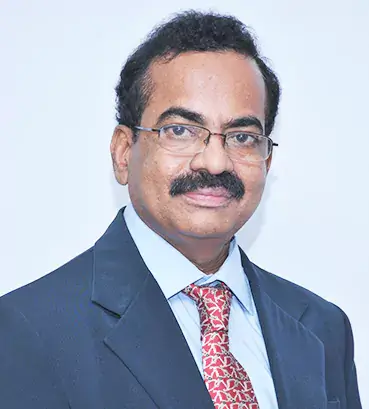
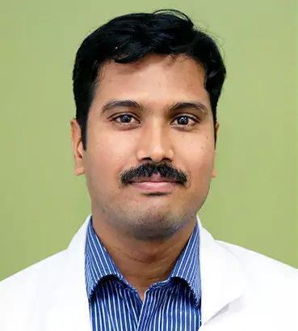
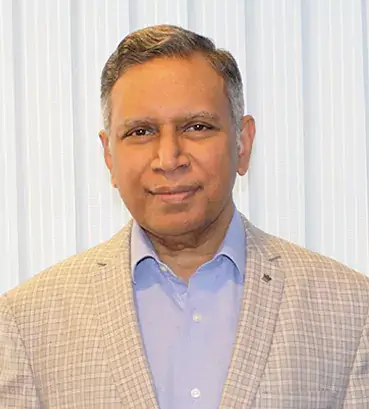
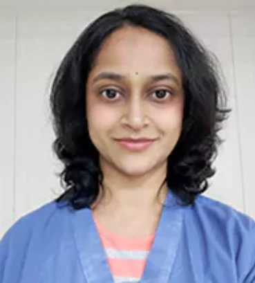
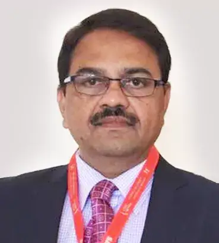
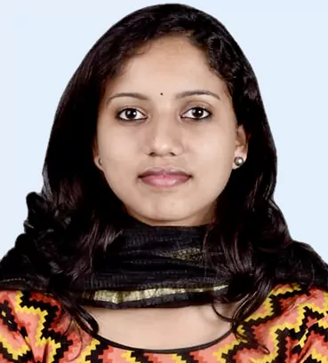
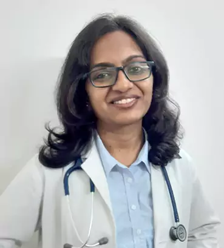
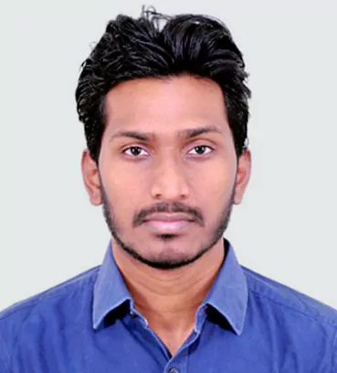
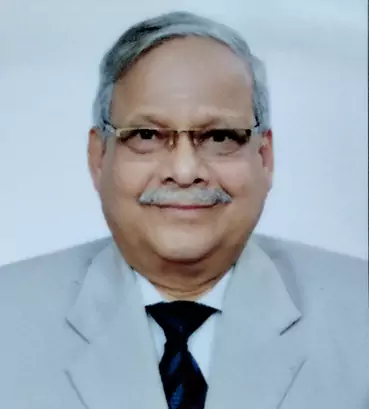
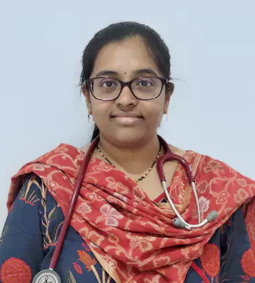

24/7 Helpline: +91 9148080000
BOOK AN APPOINTMENT

DR. N K VENKATARAMANA
Founder, Chairman and Chief Neurosurgeon
Dr N K Venkataramana is an internationally acclaimed neurosurgeon, researcher and academician. View Profile

DR. HARSHA K J
Neuro Interventional Specialist,
Stroke Specialist & Neuro Radiologist
Dr Harsha is a highly qualified and experienced authority in stroke medicine. View Profile

DR. JOSHY E.V.
Senior Consultant Neurologist
Dr. Joshy is starting Autoimmune Neurology treatment and Stem-cell therapy at Brains Hospital. View Profile

DR. PAVITHRA VENKATESWARAN
Consultant Neuroanesthesia & Neuro Critical Care
An eminent Anaesthetist with over 11 years of experience Dr. Pavithra has worked at reputed hospitals. View Profile

DR. PRAHLADA N.B
ENT Surgeon
Dr. Prahlada N.B is a graduate of JJM Medical College (Mysore University), Davanagere, Karnataka. View Profile

DR. ASWANI BABY
Speech & Swallow Therapist
Highly trained and experienced in speech and swallow therapy. View Profile

Dr. VARSHA MANOHAR
Paediatric Neurologist
Dr. Varsha is a budding and energetic doctor who has completed her fellowship in paediatric neurology. View Profile

Dr. HARI KIRAN
Consultant Neurosurgeon
Dr Hari is a committed neurosurgeon following dedicated work ethics. View Profile

Dr. Pratap Kumar Pani
Senior Consultant, Neurosurgery
Dr. Pratap is one of the well-known Neurosurgeons in the country. View Profile

Dr. Boya Shalini
Consultant, Neuro Physician
Dr Shalini is known for providing exceptional patient care with a focus on empathy and excellence. View Profile